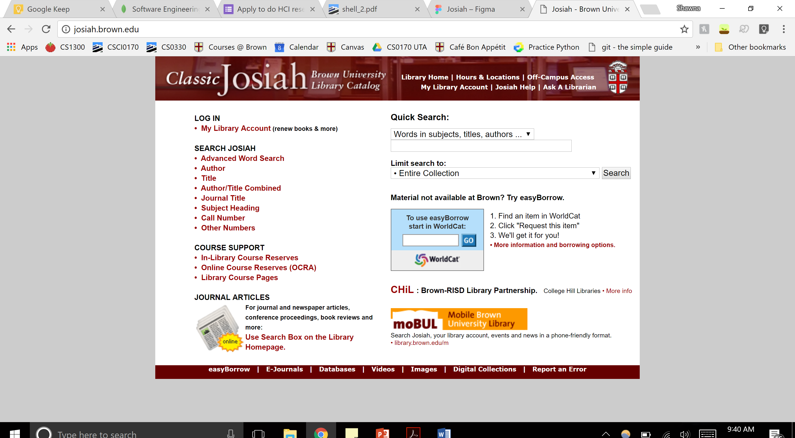
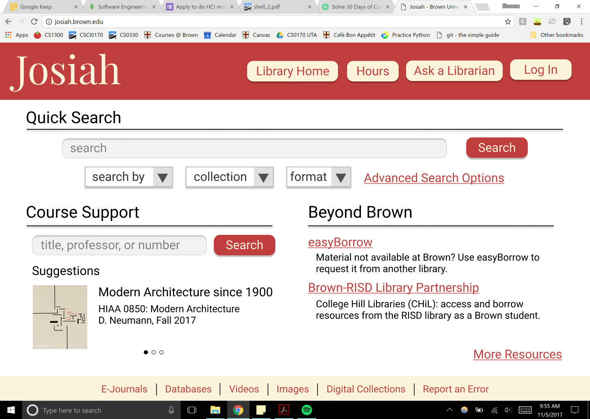

Shawna Huang
shaw·na·ness. noun. the state of being Shawna.

Josiah is a vital resource for any Brown student writing a research paper. However, the Classic Josiah interface is in desperate need of a redesign. It is not responsive to different screen sizes, and its desktop version doesn't utilize the entire browser window. It is difficult to distinguish the dominant elements of the interface, especially because the links and search bars are of homogenous size and color. This makes the interface difficult to navigate, especially for first-time users.
The first step is redesigning Josiah's interface to improve usability. Using Balsamiq, I drew wireframes for the five main pages necessary of a library catalog, one of which is shown here. My goal was to improve usability based on six main usability criteria: intuitive design, ease of learning, efficiency of use, memorability, error frequency and severity, and subjective satisfaction. The main way I accomplished this was by separating the three main features of Josiah's home page into three distinct categories: Quick Search, Course Support, and Beyond Brown. This reduces clutter on the home page, making it easier and faster to use for both new and experienced users alike.


The next step in the process was a visual redesign. Shown here is a high-fidelity prototype made using Figma. I chose to use a color palette similar to the one currently used - red, with accents of cream. This is visually appealing without being flashy, and it also follows the Brown University color scheme of brown, red, and white to some extent.
In terms of typography, I chose a serif font (Playfair Display) for the Josiah logo, both to emulate the current logo and to provide connotations of academia and scholarship. I used a sans serif font (Roboto) for the rest of the text to provide a sense of readability and modernity.
The last piece of the redesign process is making the interface responsive. Shown here is an annotated mockup of the high fidelity prototype, describing how the elements should change as the screen size changes.
On the mobile version, the buttons in the header bar stack into a single column beneath the Josiah logo, which moves into the center of the page. The Course Support and Beyond Brown sections stack, creating a single column. This ensures both sections are wide enough to be readable and usable, and it adds to the single column/scrolling design of the mobile layout.
I used HTML/CSS to create the redesigned interface. In particular, I took advantage of the CSS grids and @media tags.

I realy enjoyed getting to explore the entire redesign process from start to finish, making sure to account for usability, visual design, and responsiveness. I also gained more experience with CSS, especially grids, flexboxes, and @media tags. I plan to continue iterating and improving this design, particularly the mobile version of the interface.